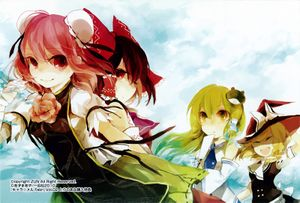

- Welcome to Touhou Wiki!
- Please register to edit. For assistance, check in with our Discord server or IRC channel.
Wild and Horned Hermit
| 東方茨歌仙 Wild and Horned Hermit | |
|---|---|
|
 | |
| Publisher | |
| Released |
July 2010 - ongoing |
| Writers | |
| Illustrators | |
| Chapters |
49 |
Touhou
Read online (ongoing)[edit]
MangaDex: Touhou Ibara Kasen ~ Wild and Horned Hermit.
Released by Gaku Gaku Animal Land, Alpha Beta Kappa (Clarste, et al.) and Reality Dreamers.
Compilation Version[edit]
WaHH Vol 1-5
Compilation of Volume 1 - 5.
WaHH Bonus Comics 1-9
Comic REX exclusive promotional bonus comics that were never reprinted in the tankoubon volumes.
Wild and Horned Hermit Vol. 1 (June 27, 2011)[edit]
- Chapter One: The One-Armed Horned Hermit (July 24, 2010)
- Chapter Two: The Intentionally Abandoned Technology and Hell (September 25, 2010)
- Chapter Three: The Criminal's Gold Mine (November 25, 2010)
- Chapter Four: An Artificial Lake of Faith (January 25, 2011)
- Chapter Five: The Hermit's Duty (March 28, 2011)
Wild and Horned Hermit Vol. 2 (March 27, 2012)[edit]
- Chapter Six: The Invisible Poison the Thunder Holds (May 25, 2011)
- Chapter Seven: The Real God of Fortune (July 25, 2011)
- Chapter Eight: The Fox's Trick (September 24, 2011)
- Chapter Nine: New and Old Youkai (November 25, 2011)
- Chapter Ten: The Otherworld of Hahakigi (January 25, 2012)
- Tiny Business Travel Edition 1 (Comic REX 2011-7) WaHH Volume 2 Ch. 06a
- Tiny Business Travel Edition 2 (Comic REX 2011-8) WaHH Volume 2 Ch. 06b
Wild and Horned Hermit Vol. 3 (July 27, 2013)[edit]
- Chapter Eleven: Unshou the Fisherman (March 24, 2012)
- Chapter Twelve: Hell's Welcoming (May 25, 2012)
- Chapter Thirteen: Kappa Forsaking the River (July 25, 2012)
- Chapter Fourteen: Youkai Preferred by Humans (December 10, 2012)
- Chapter Fifteen: Visible Goshintai (February 16, 2013)
- Tiny Business Travel Edition 3 (Comic REX 2012-5) WaHH Volume 3 Ch. 11a
- Tiny Business Travel Edition 4 (Comic REX 2012-6) WaHH Volume 3 Ch. 11b
- Tiny Business Travel Edition 5: Gensokyo in Downpour (Comic REX 2013-9) WaHH Volume 3 Ch. 12a
- Tiny Business Travel Edition 6: Kappa's Strategic Conference (Comic REX 2013-10) WaHH Volume 3 Ch. 12b
Wild and Horned Hermit Vol. 4 (May 27, 2014)[edit]
- Chapter Sixteen: The Oni's Drinking Vessel (April 10, 2013)
- Chapter Seventeen: The Rainy Season's Rare Stone (June 14, 2013)
- Chapter Eighteen: The Hermit as a Religious Figure (August 10, 2013)
- Chapter Nineteen: A Sake with History (October 10, 2013)
- Chapter Twenty: The Unfortunate Tori-no-Ichi (December 10, 2013)
- Tiny Business Travel Edition 7: Kasen and Suika and the Tori no Ichi (Comic REX 2014-7) WaHH Volume 4 Ch. 20a
- Tiny Business Travel Edition 8: Sanae, Rakes and the Tori no Ichi (Comic REX 2014-8) WaHH Volume 4 Ch. 20b
Wild and Horned Hermit Vol. 5 (December 27, 2014)[edit]
- Chapter Twenty One: Onis Out, Stomachs In (February 10, 2014)
- Chapter Twenty Two: The Fishy Manzairaku (April 10, 2014)
- Chapter Twenty Three: The Misguided Shrine Maiden (June 20, 2014)
- Chapter Twenty Four: Scaled Thunder (August 9, 2014)
- Chapter Twenty Five: The Spherical Cage (October 17, 2014)
- Tiny Business Travel Edition 9: The Shrine Maiden Hermit and the Hakurei Shrine (Comic REX 2015-3) WaHH Volume 5 Ch. 23a
Wild and Horned Hermit Vol. 6 (January 27, 2016)[edit]
- Chapter Twenty Six: The Sullen Oddity (December 25, 2014)
- Chapter Twenty Seven: The Youkai-Piercing Needles (February 10, 2015)
- Chapter Twenty Eight: Under the Cherry Blossoms, Even Corpses Cannot Rest (June 17, 2015)
- Chapter Twenty Nine: A Dream of the Deep Secret World (August 10, 2015)
- Chapter Thirty: Power Permitted Only to the Gods (October 10, 2015)
- Vol. 6 Bonus Material
Wild and Horned Hermit Vol. 7 (December 27, 2016)[edit]
- Chapter Thirty One: Who Spared the Rabbits? (December 10, 2015)
- Chapter Thirty Two: The Secret Pompoko Battle for the King of the Hill (February 17, 2016)
- Chapter Thirty Three: Western Devils Running Rampant Underfoot (April 09, 2016)
- Chapter Thirty Four: The Unidentified Haze That Afflicts the Brain (June 17, 2016)
- Chapter Thirty Five: What Kasen Ibaraki Believes In (August 10, 2016)
- Vol. 7 Bonus Material
Wild and Horned Hermit Vol. 8 (August 26, 2017)[edit]
- Chapter Thirty Six: Autumn with the sky clear and blue, and shrines growing stout (October 17, 2016)
- Chapter Thirty Seven: Does that Flash Bring Snow, or Gods? (December 10, 2016)
- Chapter Thirty Eight: Shrine as Sacred Ground (February 10, 2017)
- Chapter Thirty Nine: Because Youkai Mountain is There (April 18, 2017)
- Chapter Forty: The Strange Weather Gnawing at Gensokyo (June 12, 2017)
Wild and Horned Hermit Vol. 9 (July 27, 2018)[edit]
- Chapter Forty One: Cool Air From Heaven (August 10, 2017)
- Chapter Forty Two: Take Back the Four Seasons (October 13, 2017)
- Chapter Forty Three: The Hakurei Shrine Cannot Make A Profit (December 26, 2017)
- Chapter Forty Four: Another Way to Exceed One's Lifespan (February 13, 2018)
- Chapter Forty Five: The Worst and the Best Banquet (April 13, 2018)
Volume TBA[edit]
Chapter Forty Six: Wandering Wraiths, and the Transcendence of Death (June 11, 2018)
Translated by Clarste, et al.
Chapter Forty Seven: Schadenfreude Utopia (October 17, 2018)
Translated by Clarste, et al.
Chapter Forty Eight: Not Stopping to Ask for Direction in the Land of Darkness (December 13, 2018)
Translated by Clarste, et al.
Chapter Forty Nine: The Inhuman Talent Embracing Wickedness (Part 1) (February 14, 2019)
Translated by Clarste, et al.
Chapter Forty Nine: The Inhuman Talent Embracing Wickedness (Part 2) (April 18, 2019)
Translated by Clarste, et al.
External Links[edit]
- Febri
- Wild and Horned Hermit official website